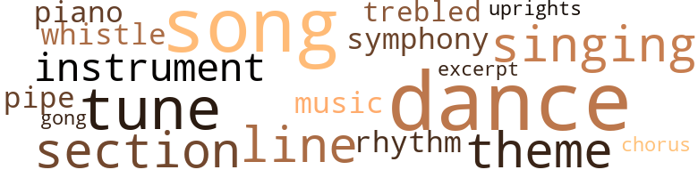
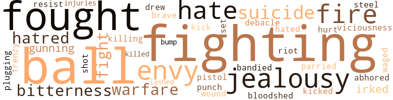
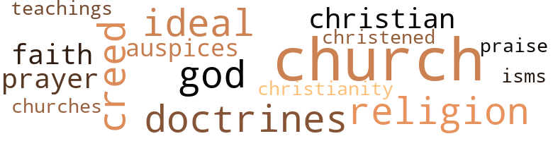

Golden Recovery (The), by Gross, Werter Livingston (1946)
35 music-related terms matched in this text.
Most frequent terms in this topic: song (5); dance (3); section (2); theme (2); tune (2)
chorus.n.01
Definition: any utterance produced simultaneously by a group
| word | sentence |
|---|---|
| chorus | Allen , straying on the field , was surprised to note Ethel Truegood lustily joining in the rah-rah chorus and quickly joined her . |
dance.n.01
Definition: an artistic form of nonverbal communication
| word | sentence |
|---|---|
| Dances | Dances and parties can take a lot of a fellow 's time , and I intend to use mine for studying . |
| dance | The Coach gave me that old song and dance talk about fighting for my dear alma mater , but it did n't register a bit . |
| dances | The co-eds openly courted his acquaintance and invitations to dances flowed freely from the sororities . |
| dance | Overjoyed with his son 's success , Robert Drew insisted that Allen 's college chums come to the Drew home for an impromptu celebration and dance . |
| dances | Several invitations to dances had been politely but firmly refused . |
| dance | Once Allen had taken her to a dance . |
excerpt.n.01
Definition: a passage selected from a larger work
| word | sentence |
|---|---|
| excerpt | Drew , in particular , whose policies ( like thousands of others ) had been influenced by George Washington 's farewell address to Congress , kept this excerpt prominently displayed in his den : " The name of AMERICAN , which belongs to you in your national capacity , must always exalt the just pride of patriotism more than any appellation derived from local discriminations . |
gong.n.01
Definition: a percussion instrument consisting of a metal plate that is struck with a softheaded drumstick
| word | sentence |
|---|---|
| gong | The clanging of the gong that denoted the closing of the market was the swan song of a fabulous era departed forever . |
music.n.01
Definition: an artistic form of auditory communication incorporating instrumental or vocal tones in a structured and continuous manner
| word | sentence |
|---|---|
| music | The music room , with its built-in organ , gilded harp , and grand piano adjoined the spacious ballroom . |
musical_instrument.n.01
Definition: any of various devices or contrivances that can be used to produce musical tones or sounds
| word | sentence |
|---|---|
| instruments | If he finds that the soil on some sections of his ranch is poor , electronic instruments , such as the spectro-phometer , will quickly make an assay for him and he will be informed just what custom-built fertilizers are needed for the land 's deficiencies . " |
| instrument | This may sound a bit fantastic , but it 's on the way to us - a robot fruit packing instrument that will take from the vine or tree only the fruit that is of the right color , size and degree of ripeness . |
piano.n.01
Definition: a keyboard instrument that is played by depressing keys that cause hammers to strike tuned strings and produce sounds
| word | sentence |
|---|---|
| piano | The music room , with its built-in organ , gilded harp , and grand piano adjoined the spacious ballroom . |
pipe.n.04
Definition: a tubular wind instrument
| word | sentence |
|---|---|
| pipe | Its occupant must wait a few moments until a pipe line was filled in . |
rhythm.n.04
Definition: the arrangement of spoken words alternating stressed and unstressed elements
| word | sentence |
|---|---|
| rhythm | The words poured forth with liquid rhythm . |
section.n.01
Definition: a self-contained part of a larger composition (written or musical)
| word | sentence |
|---|---|
| section | By now the organization 's tentacles reached into every section and from many sources money poured like water into its coffers . |
| section | Moreover , the owner of a large tract of land not only put an attractive price on the section , but was so impressed that he reinvested practically the entire amount received in the stock of the Golden Recovery corporation . |
singing.n.01
Definition: the act of singing vocal music
| word | sentence |
|---|---|
| singing | Joining the singing , he went through the choir rehearsals automatically , but later on , after refreshments , Henry exuberantly took part in the open forum discussions . |
| singing | Throughout the daytime and evening there were many happy diversions in the patio or sun rooms - treasure hunts , weinie bakes , and outdoor singing . |
song.n.01
Definition: a short musical composition with words
| word | sentence |
|---|---|
| song | The Coach gave me that old song and dance talk about fighting for my dear alma mater , but it did n't register a bit . |
| song | A popular song of the day - " Life Is Just a Bowl of Cherries " - echoed in his heart . |
| song | " My friends , I 'm beginning to think that you 've taken your inspiration from that song ' This is the Life ' which dealt with farming . |
| song | There came a new national theme song : " Brother , Can You Spare a Dime ? " |
song.n.03
Definition: the act of singing
| word | sentence |
|---|---|
| song | The clanging of the gong that denoted the closing of the market was the swan song of a fabulous era departed forever . |
symphony.n.01
Definition: a long and complex sonata for symphony orchestra
| word | sentence |
|---|---|
| symphony | Its musicians gave symphony concerts . |
theme.n.03
Definition: (music) melodic subject of a musical composition
| word | sentence |
|---|---|
| theme | Allen consented at last , choosing for his theme his father 's beloved Washington 's Farewell Address . |
| theme | There came a new national theme song : " Brother , Can You Spare a Dime ? " |
treble.v.01
Definition: sing treble
| word | sentence |
|---|---|
| trebled | If people all over the world would use as much cotton per person as we do in the United States , the production of cotton would have to be trebled . |
tune.n.01
Definition: a succession of notes forming a distinctive sequence
| word | sentence |
|---|---|
| line | I 'm not as young as I used to be , son , and I find that by hewing to a straight line - doing business in a fair and just way - in the end I 'll come out on top . " |
| tune | National calamity had been kept at bay , to the tune of an increase of twenty billion dollars in public debt . |
| tunes | A radio was droning out some hillbilly tunes . |
| tune | If things are as you say , and knowing you two as I do , I have no reason to doubt that the old tune is going to become mighty popular again . " |
| line | Their line held firm , though greatly outweighed , and twice they intercepted passes which could have meant scores . |
upright.n.02
Definition: a piano with a vertical sounding board
| word | sentence |
|---|---|
| uprights | It was good , the ball sailing squarely between the uprights . |
whistle.v.01
Definition: make whistling sounds
| word | sentence |
|---|---|
| whistle | A whistle sounded . |
72 violence-related terms matched in this text.
Most frequent terms in this topic: ball (6); fighting (6); fought (5); envy (3); suicide (3)
abhor.v.01
Definition: find repugnant
| word | sentence |
|---|---|
| abhored | Another who abhored the thought of any form of relief was Jack Preston , yet he too in the course of time had to bend to it . |
bandy.v.02
Definition: exchange blows
| word | sentence |
|---|---|
| bandied | " Oh , but we 've just started to work on you , " bandied Henry . |
bloodshed.n.01
Definition: the shedding of blood resulting in murder
| word | sentence |
|---|---|
| bloodshed | When and if we come to realize the futility of trying to settle differences by bloodshed - which only cause lasting bitterness and hatred - will the nations of the world be at peace . " |
bump.n.01
Definition: a lump on the body caused by a blow
| word | sentence |
|---|---|
| bump | Our little world has had a mighty hard bump , but I felt you 'd come back . " |
craze.n.02
Definition: state of violent mental agitation
| word | sentence |
|---|---|
| frenzy | Corporations and public utilities , chalking up higher profits every quarter , were in a frenzy of consolidations and mergers . |
draw.v.23
Definition: pull (a person) apart with four horses tied to his extremities, so as to execute him
| word | sentence |
|---|---|
| drew | Our forefathers , when they drew up the Constitution had to have the vision of democracy before they could attempt to formulate it . |
engage.v.07
Definition: carry on (wars, battles, or campaigns)
| word | sentence |
|---|---|
| waged | The boys fought forest fires , waged war upon insect pests and tree diseases . |
envy.n.01
Definition: a feeling of grudging admiration and desire to have something that is possessed by another
| word | sentence |
|---|---|
| envy | No jealousy , no envy - nothing but the purest liking of two human beings for one another , without any ulterior motive . |
| envy | No thoughts of envy had ever come to the hearts of Jack and Henry . |
| envy | Again he strove to suppress it , fearful that Jack or Henry might sense his envy . |
ferociousness.n.01
Definition: the trait of extreme cruelty
| word | sentence |
|---|---|
| viciousness | " Okay , " said Allen , and there was a tone of viciousness in his words , " but now my future is my own . |
fight.n.02
Definition: the act of fighting; any contest or struggle
| word | sentence |
|---|---|
| fighting | When he goes down , he 'll go down fighting . |
| fighting | We 'll go down fighting , as the trite expression goes , but that is n't the big idea at all . |
fight.n.05
Definition: a boxing or wrestling match
| word | sentence |
|---|---|
| fight | " Right now we have an opening for an energetic young man to make the rounds once or twice a week and pick up contributions to - well , sort of help us in our fight against crime . " |
| fight | When opposition comes from both economic principles and a matter of religious principles , it 's a losing fight for anybody . |
fight.v.02
Definition: fight against or resist strongly
| word | sentence |
|---|---|
| fighting | He sensed that she too was fighting for existence in a severe world . |
| fought | The boys fought forest fires , waged war upon insect pests and tree diseases . |
| fought | Moreover , local administrators were not always efficient or nonpartisan , and in some instances , though the authorities in Washington fought against it , served as a football for partisan politics . |
| fighting | The Coach gave me that old song and dance talk about fighting for my dear alma mater , but it did n't register a bit . |
| fighting | He wuz a pretty poor specimen of humanity , but he went down fighting ' . " |
| fought | This was her big secret now , and she fought to prevent any disclosure of it . |
| fought | Its premises were wrangled over , argued and most bitterly fought out , but in the end we brought forth what is unquestionably the soundest form of government the world has ever known . " |
| fought | A great war abroad had been fought and won , leaving in its wake vast new fortunes - and gleaming white crosses . |
| fighting | He tugged hard at his cigar , fighting to reason it out , blaming himself for everything . |
gall.v.02
Definition: irritate or vex
| word | sentence |
|---|---|
| irked | Allen , still confined to his hospital bed , was irked with impatience . |
| irked | " Well , " retorted Ethel , a bit irked with the subject , " when a man is willing to go through a marriage ceremony with a person who is attracted mostly or solely by his material possessions , he gets considerably less than a wife . " |
gun.v.01
Definition: shoot with a gun
| word | sentence |
|---|---|
| gunning | Sooner or later the underworld in this city is going to fully organize and come gunning for us . |
| gunning | " Those fellows are gunning for us . |
hate.n.01
Definition: the emotion of intense dislike; a feeling of dislike so strong that it demands action
| word | sentence |
|---|---|
| hatred | When and if we come to realize the futility of trying to settle differences by bloodshed - which only cause lasting bitterness and hatred - will the nations of the world be at peace . " |
| hatred | In short , the Golden Recovery is premised on a love of freedom - and a hatred of regimentation . |
hate.v.01
Definition: dislike intensely; feel antipathy or aversion towards
| word | sentence |
|---|---|
| hate | " But let 's not discuss war , " laughed Jack , " I hate it . " |
| hated | Soon it was not long before there was a tinge of jealousy in Allen 's makeup , though he tried to suppress it and hated himself for such feeling . |
| hate | " And there 's another thing , though I hate to mention it . |
| hate | Jack listened silently and then queried : " Mr. Drew , you 've done so much for us that I hate to ask one more favor . " |
injury.n.01
Definition: any physical damage to the body caused by violence or accident or fracture etc.
| word | sentence |
|---|---|
| injuries | Two of the regulars were out with injuries and the prospect of winning Saturday 's affray was dubious . |
jealousy.n.01
Definition: a feeling of jealous envy (especially of a rival)
| word | sentence |
|---|---|
| jealousy | No jealousy , no envy - nothing but the purest liking of two human beings for one another , without any ulterior motive . |
| jealousy | Soon it was not long before there was a tinge of jealousy in Allen 's makeup , though he tried to suppress it and hated himself for such feeling . |
| jealousy | Allen was as vociferous as the other students in cheering Jack , yet deep within him was that ever rising tide of jealousy . |
kick_back.v.02
Definition: spring back, as from a forceful thrust
| word | sentence |
|---|---|
| kicked | Henry kicked up some sand with his toe and went on savagely : " They did n't live - they only existed , for most of the necessities of life were as dear as they arc today . |
| kick | If it were stopped cold , they would have to kick out on fourth down , and » with every split second counting , possession was everything . |
kill.v.10
Definition: cause the death of, without intention
| word | sentence |
|---|---|
| killed | Mary herself had a six-months-old child born after her husband had been killed in a construction accident . |
killing.n.02
Definition: the act of terminating a life
| word | sentence |
|---|---|
| killing | Like a person who plays the horse races , I figure I can make just one more killing and then quit . |
musket_ball.n.01
Definition: a solid projectile that is shot by a musket
| word | sentence |
|---|---|
| ball | Now the question is - do you want to play ball with us or not ? " |
| ball | Then late in the first quarter came a fumble , due to the wet ball , and the opposite team recovered . |
| ball | With the ball on their own thirteen yard line , following a long high spiral punt from the opposition , it seemed like certain defeat for Jack 's team . |
| ball | Their opponents could and probably would merely " freeze " the ball until time ran out . |
| ball | The ball was quickly snapped , the backfield swung into motion and after some clever deception , Jack caught a lateral and sprinted around right end . |
| ball | It was good , the ball sailing squarely between the uprights . |
open_fire.v.01
Definition: start firing a weapon
| word | sentence |
|---|---|
| fire | " I hope they did n't fire the poor chap , " injected Thelma . |
| fire | " They ai n't goin ' to fire you if you slow up a bit . |
| fire | Henry was quick to point them out , but before Jack could fire two Marines appeared from nowhere and , leaping bodily on the two Japanese , brought them to earth . |
pain.v.02
Definition: cause emotional anguish or make miserable
| word | sentence |
|---|---|
| hurt | Somehow or other , there is a sort of glamour about a ' Native Son ' as the term goes , and it would n't hurt you a bit to be one . " |
parry.v.01
Definition: impede the movement of (an opponent or a ball)
| word | sentence |
|---|---|
| parried | The boy parried the question . |
pistol.n.01
Definition: a firearm that is held and fired with one hand
| word | sentence |
|---|---|
| pistol | A few moments later the timekeeper 's pistol barked and the game was over . |
punch.n.01
Definition: (boxing) a blow with the fist
| word | sentence |
|---|---|
| punch | So I say , let 's beat them to the punch , make one last big clean up and then be on our way . " |
punch.v.01
Definition: deliver a quick blow to
| word | sentence |
|---|---|
| plugging | With conditions as they are , I consider myself fortunate to keep going , but I 've got to continue plugging . |
resentment.n.01
Definition: a feeling of deep and bitter anger and ill-will
| word | sentence |
|---|---|
| bitterness | Once more there was a surge of bitterness in his heart , but he quickly overcame it . |
| bitterness | When and if we come to realize the futility of trying to settle differences by bloodshed - which only cause lasting bitterness and hatred - will the nations of the world be at peace . " |
resist.v.04
Definition: withstand the force of something
| word | sentence |
|---|---|
| resist | The houses will be built either of rammed earth or a new type of adobe , which is not only moisture-proof , fire-proof , termite repellant , resistant to the transmission of heat , cold or sound , but also so constructed as to resist any terrestrial disturbances such as earthquakes . |
riot.n.01
Definition: a public act of violence by an unruly mob
| word | sentence |
|---|---|
| riot | and though they had no prearranged agreement on the subject , each had resolved riot to become pledged to any such secret organization . |
shoot.v.02
Definition: kill by firing a missile
| word | sentence |
|---|---|
| shot | Jack and Henry strolled about " boot hill " where were sleeping those frontier men who had shot it out to the last , and died with their boots on . |
sic.v.01
Definition: urge to attack someone
| word | sentence |
|---|---|
| set | I know her mind has been set on my finishing my education , and she 's been saving every penny to that end , but somehow . . . " His voice trailed as an automobile roared up in the darkness and Robert Drew alighted from it . |
suicide.n.01
Definition: the act of killing yourself
| word | sentence |
|---|---|
| suicide | The decade of sure money had become the day of suicide . |
| suicide | Jack , your father has committed suicide ! " |
| suicide | Ivar Kreuger , the so-called Swedish match king , committed suicide and it developed subsequently that the firm of Kreuger and Toll , in which American investors were involved to the amount of two hundred and fifty million dollars , was nothing but a gigantic fraud . |
sword.n.01
Definition: a cutting or thrusting weapon that has a long metal blade and a hilt with a hand guard
| word | sentence |
|---|---|
| steel | " We 'll hold off a little longer , " Watson confided one night , " and then , when we get all the big shots under our thumbs , we 'll spring a steel trap about them . " |
thrashing.n.01
Definition: a sound defeat
| word | sentence |
|---|---|
| debacle | The debacle by this time was of unparalleled severity , and it was clearly evident that the financial machinery of the nation must somehow be put into a working condition or a major catastrophe would result . |
war.n.03
Definition: an active struggle between competing entities
| word | sentence |
|---|---|
| warfare | Take the animal kingdom , with its thousands upon thousands of different species , yet only one kind makes deliberate and organized warfare upon its own kind - and that is Man himself . " |
| warfare | The harsh demands of dreadful warfare began to work overwhelming changes in the world of business . |
weather.v.01
Definition: face and withstand with courage
| word | sentence |
|---|---|
| brave | With twelve million people out of work , it was a brave promise . |
whip.v.04
Definition: strike as if by whipping
| word | sentence |
|---|---|
| lashed | Instantly , Ethel lashed back at him . |
wound.n.01
Definition: an injury to living tissue (especially an injury involving a cut or break in the skin)
| word | sentence |
|---|---|
| wound | Though still weak from his wound , Allen pleaded that he be allowed to make the next Golden Recovery broadcast and this was granted . |
27 religion-related terms matched in this text.
Most frequent terms in this topic: church (7); religion (2); Ideal (2); doctrines (2); creed (2)
augur.n.01
Definition: (ancient Rome) a religious official who interpreted omens to guide public policy
| word | sentence |
|---|---|
| auspices | Under its auspices 100,000 different projects were undertaken . |
baptize.v.01
Definition: administer baptism to
| word | sentence |
|---|---|
| christened | The Preston 's baby was also a boy , christened John but later nicknamed Jack . |
christendom.n.01
Definition: the collective body of Christians throughout the world and history (found predominantly in Europe and the Americas and Australia)
| word | sentence |
|---|---|
| Christianity | The fact is , in the very beginning , he started attacking Christianity with the result that some of his colonies were made up of crackpots and fanatics . " |
christian.n.01
Definition: a religious person who believes Jesus is the Christ and who is a member of a Christian denomination
| word | sentence |
|---|---|
| Christian | Eloquently , he declared that race prejudice in a culture which founds its system of ethical and religious values on the Christian principles of " The Brotherhood of Man " is a brutal hypocrisy . |
church.n.02
Definition: a place for public (especially Christian) worship
| word | sentence |
|---|---|
| church | " You 're always welcome here , son , " whispered one of the church elders . |
| church | As she wheeled about , the church official introduced the two briefly : " Miss Thelma Brown - this is a brand new member of our group , Henry Smith . " |
| church | They were walking from church together . |
| church | Halted by a traffic signal , he and his companion looked off to a church from which a dozen or so people were issuing , following a pair obviously a bride and groom . |
| church | Franklin Watson 's original somewhat small-time plan of fleecing the underworld had bloated itself to gigantic proportions , due in a large measure to Allen Drew 's oratory in welding together the many civic bodies , church groups and clubs in the city . |
| church | Your luxurious apartment , the way you threw money around . . . without any visible means except club and church contributions . . . and it just got to be a nasty mess . |
church.n.04
Definition: the body of people who attend or belong to a particular local church
| word | sentence |
|---|---|
| church | The church before which he stood was an imposing edifice , but there was a friendly sign by the door . |
| churches | There were churches for all . |
creed.n.01
Definition: any system of principles or beliefs
| word | sentence |
|---|---|
| creed | Henry admitted this freely , stating that there exists an important minority of approximately thirty unions which reject the equalitorian creed and consistently practice discriminations against Negroes . |
| creed | It will be broad enough in its principles to qualify every individual to compete with the higher standards of living in his or her respective vocation , regardless of age , race , creed or color . |
doctrine.n.01
Definition: a belief (or system of beliefs) accepted as authoritative by some group or school
| word | sentence |
|---|---|
| isms | There will be no ' isms ' of any kind . |
| doctrines | Plato 's doctrines consist of two great aims . |
| doctrines | According to Plato 's acceptance of philosophy , it consists of not merely a set of doctrines , but the perfecting of the whole spiritual life . |
god.n.03
Definition: a man of such superior qualities that he seems like a deity to other people
| word | sentence |
|---|---|
| God | When a man meditates with God and his conscience alone it is a mighty good thing for everybody , as that party thousands of years ago found out . " |
| God | The Utopia of Sir Thomas Moore , Cicero 's De Republica and St. Augustine 's City of God were based on the Republic of Plato . " |
ideal.n.02
Definition: model of excellence or perfection of a kind; one having no equal
| word | sentence |
|---|---|
| Ideal | At the moment he was deep in " The Ideal Republic of Plato . " |
| Ideal | " The Ideal Republic of Plato , as it is known . |
praise.n.02
Definition: offering words of homage as an act of worship
| word | sentence |
|---|---|
| praise | But he took the praise that was poured on him modestly , protesting that his team mates deserved equal credit for it was their perfect functioning that made the opening for him possible . |
prayer.n.01
Definition: the act of communicating with a deity (especially as a petition or in adoration or contrition or thanksgiving)
| word | sentence |
|---|---|
| prayer | They found him outwardly laughing , while deep inside he was giving thanks for his unbounding faith in humanity and the divine power of prayer , for Henry had prayed for this very moment . " |
religion.n.01
Definition: a strong belief in a supernatural power or powers that control human destiny
| word | sentence |
|---|---|
| faith | They found him outwardly laughing , while deep inside he was giving thanks for his unbounding faith in humanity and the divine power of prayer , for Henry had prayed for this very moment . " |
| religion | " But Owen himself had one great failing that spelled doom for his ideas - he was not a tolerant man , especially when it came to religion . |
| religion | With slight shades of differences you have the same religion , manners , habits , and political principles . |
teaching.n.02
Definition: a doctrine that is taught
| word | sentence |
|---|---|
| teachings | If only we could do that , we would have a true democracy combined with the teachings of Plato ! " |